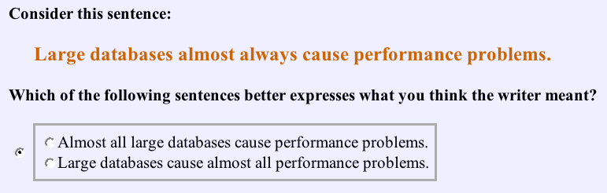

HumAnn


Human Annotation
Sense Distinctions
Multi-Valued Versus Binary Selection
Task difficulty a function of size of set of alternatives?
E.g., WordNet assigns 12 senses to "true" as adjective, 13 senses to "face" as noun.
Compare binary selection in Pool (2007):
